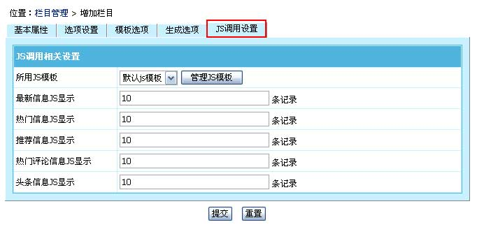

| 二、栏目功能说明 |
| (一)、帝国CMS的非终极栏目的页面模式支持以下四种： |
| 1、封面式：页面由多个标签显示出栏目信息，不分页，显示样式由封面模板决定。 |
| 2、列表式：信息列表分页显示，显示样式由列表模板决定。会显示所有子栏目下的信息列表。 |
3、页面内容式：页面同封面式，显示样式由栏目的“页面内容”决定。相对于封面式，页面内容式更独立，对于页面格式不通用的栏目用页面内容式更合适（比如关于我们等单页）。 |
| 4、栏目绑定信息：生成的页面为某一信息的内容。方便用发布信息做自定义页面。显示样式由填写的“绑定信息ID”决定。 |
| |
| (二)、帝国CMS的终极栏目的页面模式只有一种：列表式 |
| 1、列表式：信息列表分页显示，显示样式由列表模板决定。 |
| |
| (三)、增加栏目必填项： |
| 1、非终极栏目：栏目名、栏目存放文件夹、绑定的系统模型、[封面式要选封面模板、列表式要选列表模板、页面内容式要填写页面内容、绑定信息要填写绑定的信息ID](模板选项TAB) |
| 2、终极栏目：栏目名、栏目存放文件夹、绑定的系统模型、所属列表模板(模板选项TAB)、所属内容模板(模板选项TAB) |
| 三、增加栏目 |
| (一)、进入增加栏目页面： |
| 1、登录后台，单击“栏目”菜单，选择“管理栏目”子菜单，进入管理栏目界面： |
| |
| 2、进入管理栏目界面： |
|
| 3、从管理栏目页面点击“增加栏目”按钮，进入增加栏目界面。 |
| (二)、增加父栏目：（即非终极栏目） |
| 必填项：栏目名、栏目存放文件夹、绑定的系统模型、[封面式要选封面模板、列表式要选列表模板、页面内容式要填写页面内容、绑定信息要填写绑定的信息ID](模板选项TAB) |
| 1、基本属性 |
|
| 栏目名称 |
输入栏目名称。 |
| 栏目别名 |
填写信息标签调用时显示的栏目名。(不填则与栏目名相同) |
| 所属父栏目 |
选择上级栏目。 |
| 栏目类型 |
内部栏目：正常的网站栏目。
外部栏目：只是作为一个链接，链接到外部页面，无实际内容。（增加只需填外部栏目链接地址） |
| 是否终级栏目 |
不选为增加父栏目(非终极栏目)、勾选为增加终极栏目。（终级栏目下才能增加信息）
（设置后，管理栏目页面还可以转换） |
| 栏目存放文件夹 |
设置栏目存放的目录。（一般只需填本栏目目录） |
| 绑定的系统模型 |
选择栏目采用哪个系统模型。（如果是父栏目，标签按父栏目调用时则调用此模型的信息） |
| 使用优化方案 |
选择此栏目使用的优化方案。 |
| 绑定域名 |
给栏目单独绑定域名。(没有绑定，请留空.后面无需加"/") |
| |
应用于子栏目：将绑定的域名应用于子栏目地址。 |
| 栏目缩略图 |
填写栏目缩图。 |
| 页面关键字 |
输入页面的SEO关键字，该内容显示于页面“网页keywords”处。 |
| 栏目简介 |
填写栏目简介内容。 |
|
| 2、选项设置 |
|
| 是否显示到导航 |
选择栏目是否显示到导航。（如：栏目导航标签，地图标签等调用时是否显示） |
| 显示排序 |
设置显示或标签调用栏目时的显示顺序（值越小越前面）。 |
| 栏目访问权限 |
设置本栏目页面的查看权限，不选为不限(游客/会员均可访问)。 |
| 开放投稿 |
选择本栏目是否开放投稿。（如果关闭，投稿页面父栏目下的子栏目都不会显示） |
|
| 3、模板选项 |
|
| 页面显示模式 |
选择栏目页面的显示模式。（封面式、列表式、页面内容式、栏目绑定信息）
封面式要选择封面模板、列表式要选择列表模板、内容式要录入页面内容、栏目绑定信息要填绑定信息ID。 |
| 封面模板 |
采用封面式时选择使用的封面模板。 |
| 所属列表模板 |
采用列表式时选择使用的列表模板。（选择下拉框中白色条选项）
（一般只需选静态页的列表模板，如果栏目同时采用静态页和动态页两种就再选动态页列表模板） |
| 搜索模板 |
选择当按此栏目搜索时使用的搜索模板。（选择下拉框中白色条选项） |
| WAP模板 |
选择本栏目使用的WAP模板。WAP模块访问页面的设置。 |
| |
应用于子栏目：子栏目页面也采用此WAP模板。 |
| 页面内容 |
采用页面内容式时此项需录入页面内容（支持标签同封面模板，内容可用Dreamweaver制作）。 |
|
| 4、生成选项 |
|
| 栏目页模式 |
静态页面：栏目页生成静态页面。
动态页面：栏目页不生成静态页面。（动态页面访问：/e/action/ListInfo/?classid=栏目ID） |
| 内容页模式 |
静态页面：内容页生成静态页面。
动态生成：访问者点击信息链接时才触发生成静态页面。
动态页面：内容页不生成静态页面。（动态页面访问：/e/action/ShowInfo.php?classid=栏目ID&id=信息ID） |
| 管理信息排序方式 |
填写后台按此栏目管理信息时的显示排序方式。 |
| 列表式页面排序方式 |
填写前台信息列表页的信息显示排序方式。（列表式时有效） |
| 是否生成 |
不生成栏目页：选择栏目不生成页面。（要页面只能后台查看时使用）
不生成内容页：选择栏目下的内容页不生成页面。（要页面只能后台查看时使用）
不生成JS调用：选择栏目下的JS调用不生成。（要页面只能后台查看时使用）
标签不调用： 选择标签按栏目调用时，不调用信息。（要页面只能后台查看时使用） |
| 栏目文件扩展名 |
填写生成的栏目页文件扩展名。 |
| 显示总记录数 |
设置限制最大显示信息的数量。（列表式时有效） |
| 生成信息每页显示 |
每页显示信息数量。（列表式时有效） |
|
| 5、JS调用设置 |
|  |
| 所用JS模板 |
选择JS调用使用的JS模板。 |
| 最新信息JS显示 |
JS调用显示最新信息的数量。 |
| 热门信息JS显示 |
JS调用显示热门信息的数量。 |
| 推荐信息JS显示 |
JS调用显示最新推荐信息的数量。 |
| 热门评论信息JS显示 |
JS调用显示热门评论信息的数量。 |
| 头条信息JS显示 |
JS调用显示最新头条信息的数量。 |
|
| (三)、增加终极栏目： |
| 必填项：栏目名、栏目存放文件夹、绑定的系统模型、所属列表模板(模板选项TAB)、所属内容模板(模板选项TAB) |
| 1、基本属性 |
|
| 栏目名称 |
输入栏目名称。 |
| 栏目别名 |
填写信息标签调用时显示的栏目名。(不填则与栏目名相同) |
| 所属父栏目 |
选择上级栏目。 |
| 栏目类型 |
内部栏目：正常的网站栏目。
外部栏目：只是作为一个链接，链接到外部页面，无实际内容。（增加只需填外部栏目链接地址） |
| 是否终级栏目 |
不选为增加父栏目(非终极栏目)、勾选为增加终极栏目。（终级栏目下才能增加信息）
（设置后，管理栏目页面还可以转换） |
| 栏目存放文件夹 |
设置栏目存放的目录。（一般只需填本栏目目录） |
| 绑定的系统模型 |
选择栏目采用哪个系统模型。（如果是父栏目，标签按父栏目调用时则调用此模型的信息） |
| 使用优化方案 |
选择此栏目使用的优化方案。 |
| 绑定域名 |
给栏目单独绑定域名。(没有绑定，请留空.后面无需加"/") |
| |
应用于子栏目：将绑定的域名应用于子栏目地址。 |
| 栏目缩略图 |
填写栏目缩图。 |
| 页面关键字 |
输入页面的SEO关键字，该内容显示于页面“网页keywords”处。 |
| 栏目简介 |
填写栏目简介内容。 |
|
| 2、选项设置 |
|
| 是否显示到导航 |
选择栏目是否显示到导航。（如：栏目导航标签，地图标签等调用时是否显示） |
| 显示排序 |
设置显示或标签调用栏目时的显示顺序（值越小越前面）。 |
| 栏目访问权限 |
设置本栏目页面的查看权限，不选为不限(游客/会员均可访问)。 |
| |
访问权限应用于信息：将栏目访问权限应用于栏目下的内容页。(选择后信息的查看权限可以不设置) |
| 开放投稿 |
选择本栏目是否开放投稿。如开启，则进行下面的前台投稿设置。 |
| 前台投稿设置 |
| 验证码 |
选择投稿是否开启验证码。 |
| 投稿权限 |
设置本栏目的投稿权限，不选为不限(游客/会员均可投稿)。 |
| 投稿生成列表 |
设置发布投稿后同时自动生成相关联的页面。（内容多时比较耗资源） |
| 投稿审核 |
选择发布投稿的信息是否需要审核。 |
| 发布信息增加 |
设置发布一篇投稿增加的点数。（不增加请设为0,扣点请设为负数）
（投稿权限设置为会员以上有效） |
| 管理投稿 |
选择会员发布投稿后是否可编辑、删除自己投稿的信息。 |
| |
编辑信息需要审核：选择修改信息后是否需要重新审核。 |
| 后台信息发布设置 |
| 增加/编辑信息 |
生成内容页：后台增加或修改信息时直接生成内容页面。 |
| |
生成列表：后台增加或修改信息后自动生成相关联的页面。（内容多时比较耗资源） |
| |
生成上一篇信息：选择后台增加/修改信息后是否同时生成上一篇信息的页面。 |
| |
检测标题重复：选择是否验证标题是否重复。 |
| 审核设置 |
选择后台增加信息时默认是否为审核状态。 |
| 使用工作流 |
选择本栏目的发布信息使用的工作流。 |
| 信息预设投票 |
选择增加信息时默认的信息投票选项。 |
| 默认查看信息权限 |
增加信息时默认的会员组权限选项。 |
| 其他设置 |
| 评论功能 |
本栏目前台信息是否开启用户评论功能。 |
| |
评论需要审核：选择评论是否要审核。 |
| 信息归档 |
设置归档大于几天的信息，如设为2天，则两天前的信息即设为归档。设为0，则所有信息都不归档。 |
| 特殊模型设置 |
| 下载/影视模型 |
模型采用downpath下载地址字段时的每行显示下载地址数设置。 |
| |
模型采用onlinepath在线地址字段时的每行显示在线观看地址数设置。 |
|
| 3、模板选项 |
|
| 所属列表模板 |
选择使用的列表模板。（选择下拉框中白色条选项）
（一般只需选静态页的列表模板，如果栏目同时采用静态页和动态页两种就再选动态页列表模板） |
| 所属内容模板 |
选择本栏目下的信息默认使用的内容模板。 |
| |
应用于已生成的信息：如果更改为其他内容模板，勾选将发布过的信息也采用此模板。 |
| 所属评论模板 |
选择本栏目信息使用的评论模板。 |
| 搜索模板 |
选择当按此栏目搜索时使用的搜索模板。（选择下拉框中白色条选项） |
| WAP模板 |
选择本栏目使用的WAP模板。WAP模块访问页面的设置。 |
| |
应用于子栏目：子栏目页面也采用此WAP模板。 |
|
| 4、生成选项 |
|
| 栏目页模式 |
静态页面：栏目页生成静态页面。
动态页面：栏目页不生成静态页面。（动态页面访问：/e/action/ListInfo/?classid=栏目ID） |
| 内容页模式 |
静态页面：内容页生成静态页面。
动态生成：访问者点击信息链接时才触发生成静态页面。
动态页面：内容页不生成静态页面。（动态页面访问：/e/action/ShowInfo.php?classid=栏目ID&id=信息ID） |
| 管理信息排序方式 |
填写后台按此栏目管理信息时的显示排序方式。 |
| 列表式页面排序方式 |
填写前台信息列表页的信息显示排序方式。 |
| 是否生成 |
不生成栏目页：选择栏目不生成页面。（要页面只能后台查看时使用）
不生成内容页：选择栏目下的内容页不生成页面。（要页面只能后台查看时使用）
不生成JS调用：选择栏目下的JS调用不生成。（要页面只能后台查看时使用）
标签不调用： 选择标签按栏目调用时，不调用信息。（要页面只能后台查看时使用） |
| 栏目文件扩展名 |
填写生成的栏目页文件扩展名。 |
| 显示总记录数 |
设置限制最大显示信息的数量。 |
| 生成信息每页显示 |
每页显示信息数量。 |
| 相关链接显示 |
设置信息相关链接的数量。（0为不生成相关链接） |
| 内容页存放目录 |
栏目目录：内容静态页面生成到栏目目录里。
自定义：自定义内容静态页面生成目录。（地址从根目录开始，比如：“html”。存放到根目录设置为/） |
| 内容页目录存放形式 |
填写内容静态页面生成的日期目录格式，空为不生成日期目录。（Y为年，m为月份，d为天数等） |
| 内容页文件命名形式 |
[前缀]：填写内容页文件名的前缀。 |
| |
命名：选择内容页文件名命名规则。 |
| 内容页文件扩展名 |
填写生成的内容页文件扩展名。 |
|
| 5、JS调用设置 |
| |
| 所用JS模板 |
选择JS调用使用的JS模板。 |
| 最新信息JS显示 |
JS调用显示最新信息的数量。 |
| 热门信息JS显示 |
JS调用显示热门信息的数量。 |
| 推荐信息JS显示 |
JS调用显示最新推荐信息的数量。 |
| 热门评论信息JS显示 |
JS调用显示热门评论信息的数量。 |
| 头条信息JS显示 |
JS调用显示最新头条信息的数量。 |
|